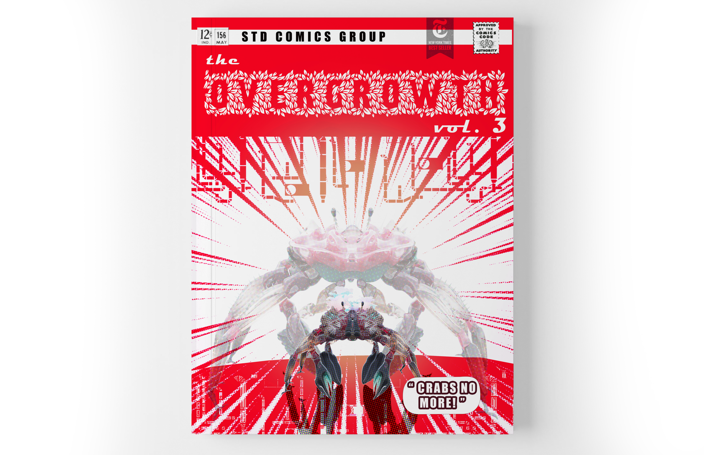
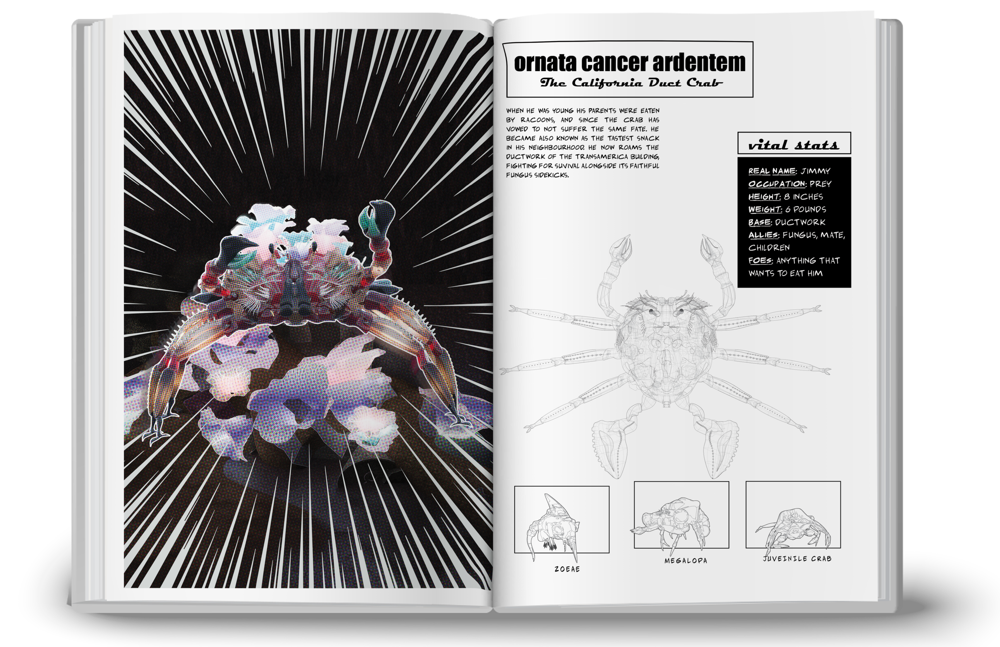
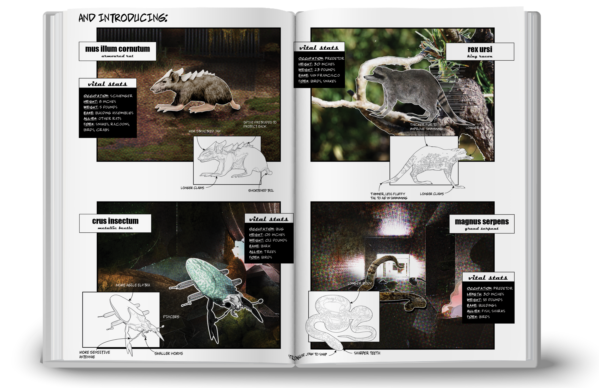
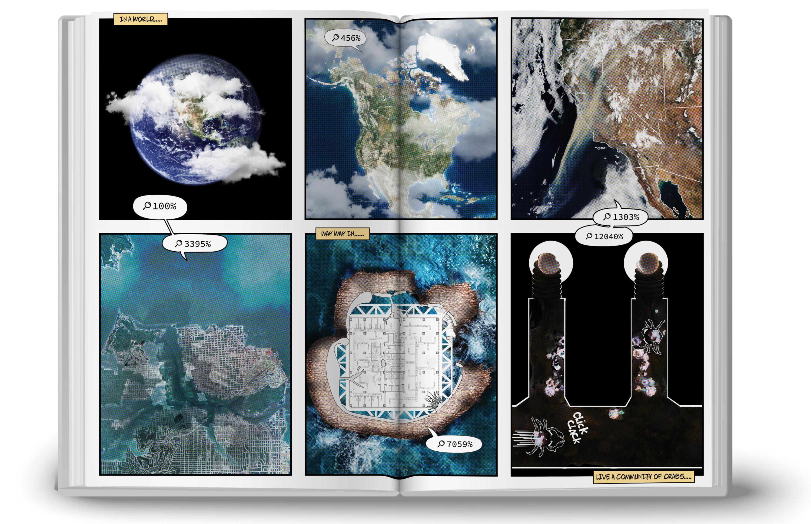
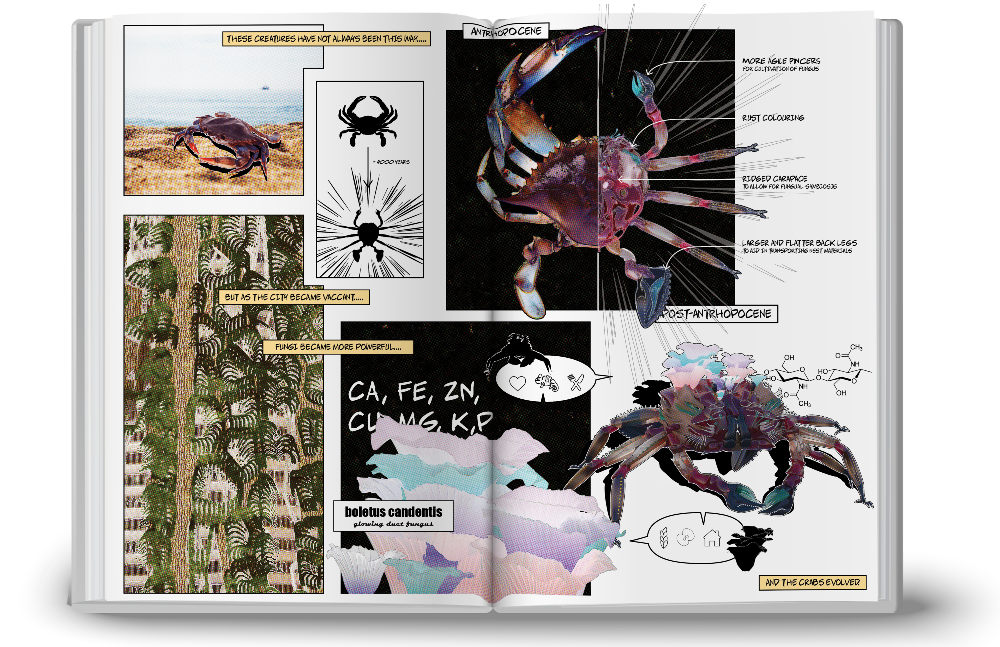
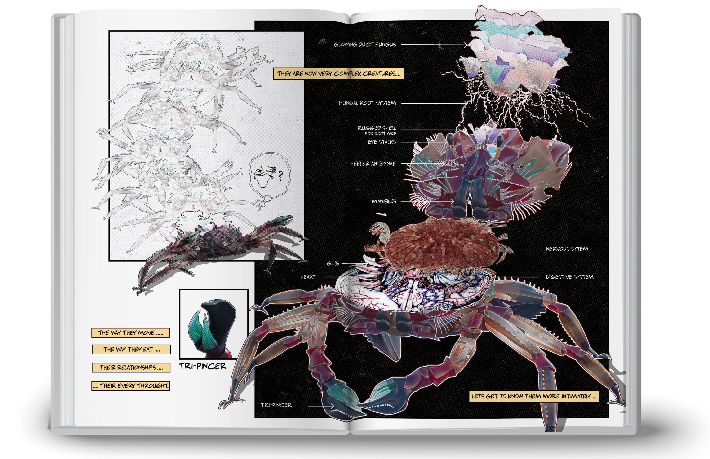
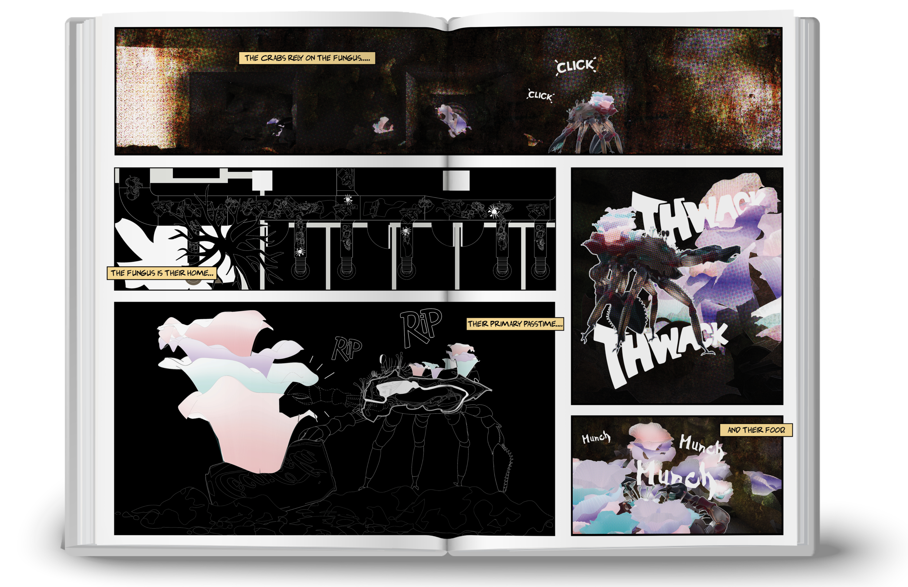
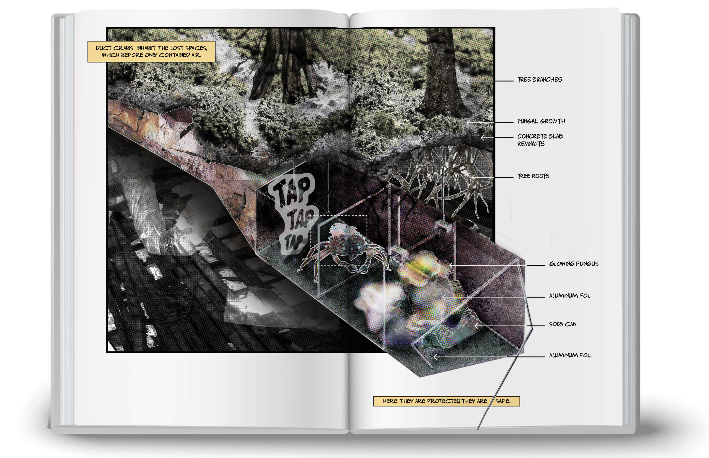
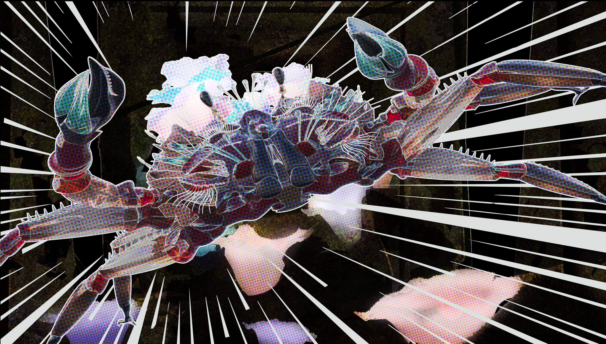
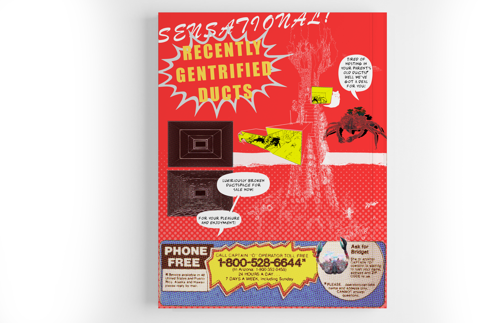

2021
CALIFORNIA DUCT CRAB
Genesis of Ecologies in the Post-Anthropocene
The crab that lives in ducts, grows fungus on its back, and gets eaten by almost everyone.
CONTEXT
ARC 920: Advanced Architecture Studio, Ryerson University
LOCATION
Transamerica Pyramid, post-Anthropocene San Francisco
SOFTWARE
3ds Max, Corona Render, Photoshop, Rhinoceros 3D, Illustrator
SUPERVISOR
Vincent Hui

4200: the post-Anthropocene
After earthquakes, liquefaction, and rising water transformed San Francisco, scientists cross-bred giant sequoias with strangling figs to support the city. The hybrid infrastructure raised and densified the city, but fungi eventually overran its spaces. With people gone, its buildings became habitats and the city was reclaimed by nature.
Meet Ornata Cancer Ardentem
Emerging from the ductwork of the overgrown city, this terrestrial crab inhabits confined, dark spaces. It evolved agile pincers and rust-colored camouflage from the blue crab and formed a symbiotic relationship with glowing duct fungus. The fungus grows on its chitin-rich shell; after molting, that growth becomes food within nests assembled from bark and urban debris.








